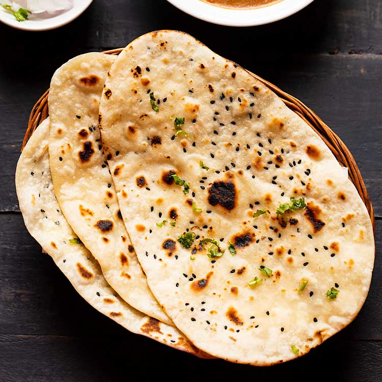

Naan

Description
A leavened flat bread originating from northern India, which is traditionally baked by slapping the bread dough onto the side of a hot dome shaped clay oven referred to as a tandoor. ... Naan has a dense chewy texture, similar to focaccia bread, and is best eaten when it is still fresh and hot.
Ingredients
- 1 package active dry yeast
- 1 cup warm water
- 1/4 cup white sugar
- 3 tablespoons milk
- 1 egg, beaten
Steps:
- In a large bowl, dissolve yeast in warm water. Let stand about 10 minutes, until frothy. Stir in sugar, milk, egg, salt, and enough flour to make a soft dough. Knead for 6 to 8 minutes on a lightly floured surface, or until smooth. Place dough in a well oiled bowl, cover with a damp cloth, and set aside to rise. Let it rise 1 hour, until the dough has doubled in volume.
- Punch down dough, and knead in garlic. Pinch off small handfuls of dough about the size of a golf ball. Roll into balls, and place on a tray. Cover with a towel, and allow to rise until doubled in size, about 30 minutes.
- During the second rising, preheat grill to high heat.
- At grill side, roll one ball of dough out into a thin circle. Lightly oil grill. Place dough on grill, and cook for 2 to 3 minutes, or until puffy and lightly browned. Brush uncooked side with butter, and turn over. Brush cooked side with butter, and cook until browned, another 2 to 4 minutes. Remove from grill, and continue the process until all the naan has been prepared.